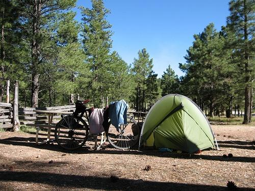
0.716321
0.798553
0.807587
0.816540

0.840884
0.895935

0.899149

0.903378
0.917092

0.921036
| Target image 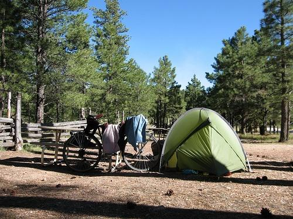 | 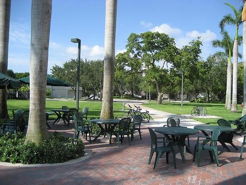 0.716321 | 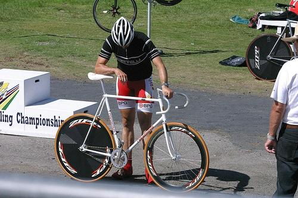 0.798553 | 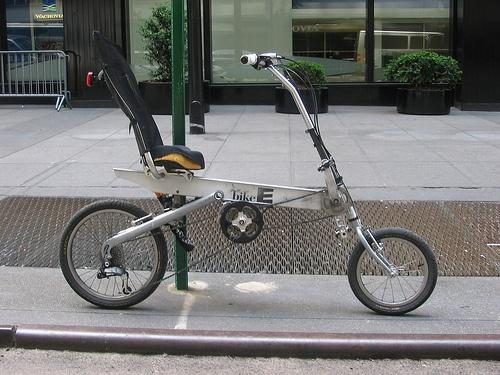 0.807587 | 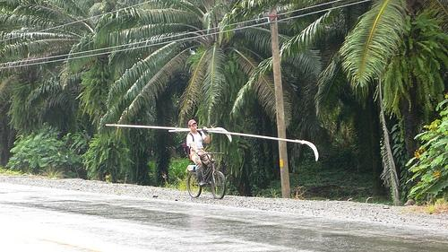 0.816540 | 0.840884 | 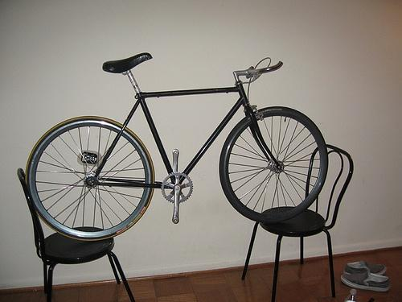 0.895935 | 0.899149 | 0.903378 | 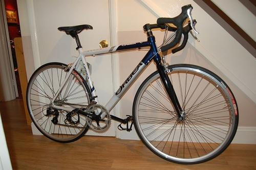 0.917092 | 0.921036 |
| Target image 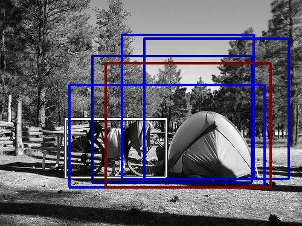 |  3128.621094 |  2613.092773 |  2543.303711 |  2537.467285 |  2378.948242 |  2338.668945 |  2197.694092 |  2149.414062 | 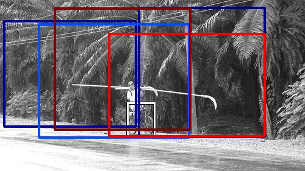 2130.283936 |  2085.916260 |
Target image |  3169.009521 |  2467.197998 |  2303.045166 |  2271.008545 |  2171.278564 | 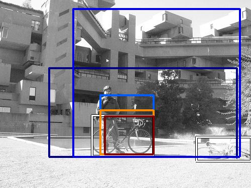 2045.274414 | 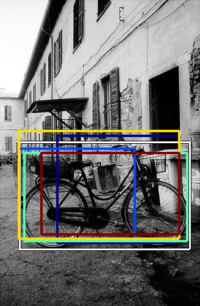 2027.119385 |  2008.167725 |  1954.672485 |  1869.776611 |
| Target image 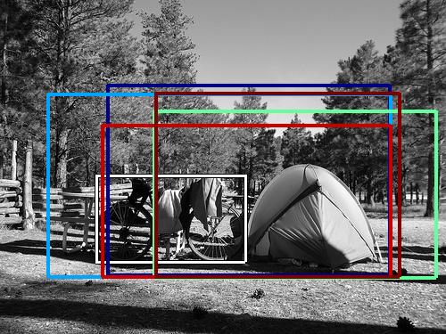 |  3689.818359 |  3343.889648 |  3105.417969 |  3095.878906 |  2974.722412 |  2172.218262 |  2056.097656 | 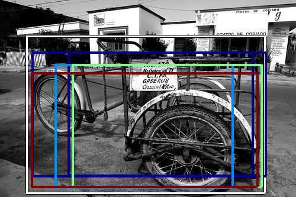 1974.189697 |  1870.278687 |  1868.084351 |
| Target image 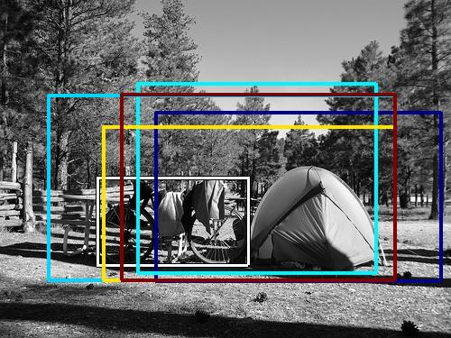 |  4422.174805 |  3107.227539 |  2947.546875 | 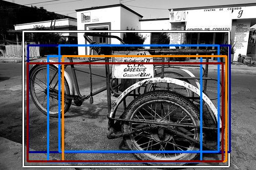 2821.123047 |  2489.753906 |  2478.440186 |  2469.701660 |  2156.799072 |  2075.689209 |  2013.501587 |